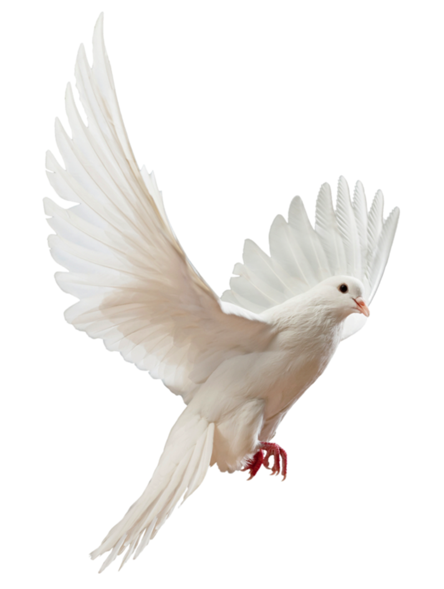

And now these three remain: faith, hope and love. But the greatest of
these is love.
- 1 Corinthians 13:13
“I don't think that we're meant to understand it all the time. I think
that sometimes we just have to have faith.”
“The deeper that sorrow carves into your being, the more joy it can
contain.”
"Love yesterday, today and forever."
- Jeremiah 31:3
Our condolences are with you and our hearts pray that you find peace in
this time. ~Your friends, Derek, Kendyl, and John